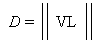
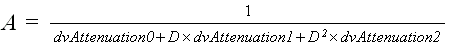

Microsoft® Direct3D® determines the distance between a light source and a vertex being lit by taking the magnitude of the vector that exists between the light's position and the vertex. This is represented by the following formula.

In the preceding formula, D is the distance being calculated, V is the position of the vertex being lit, and L is the light source's position. If D is greater than the light's range, that is, the Range member of a D3DLIGHT8 structure, Direct3D makes no further attenuation calculations and applies no effects from the light to the vertex. If the distance is within the light's range, Direct3D then applies the following formula to calculate light attenuation over distance for point lights and spotlights; directional lights don't attenuate.

In this attenuation formula, A is the calculated total attenuation and D is the distance from the light source to the vertex. The dvAttenuation0, dvAttenuation1, and dvAttenuation2 values are the light's attenuation constants as specified by the members of a light object's D3DLIGHT8 structure. The corresponding structure members are Attenuation0, Attenuation1, and Attenuation2.
The attenuation constants act as coefficients in the formula; you can produce a variety of attenuation curves by making simple adjustments to them. You can set Attenuation0 to 1.0 to create a light that doesn't attenuate but is still limited by range, or you can experiment with different values to achieve various attenuation effects.
The attenuation at the maximum range of the light is not 0.0. To prevent lights from suddenly appearing when they are at the light range, an application can increase the light range. Or, the application can set up attenuation constants so that the attenuation factor is close to 0.0 at the light range. The attenuation value is multiplied by the red, green, and blue components of the light's color to scale the light's intensity as a factor of the distance light travels to a vertex.
After computing the light attenuation, Direct3D also considers spotlight effects if applicable, the angle that the light reflects from a surface, and the reflectance of the current material to calculate the diffuse and specular components for that vertex. For more information, see Spotlight Falloff Model and Reflectance Model.